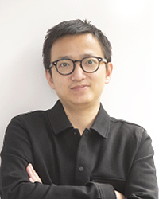

I am an assistant professor in the Department of Computer Science at the University of Hong Kong (HKU), and a co-director of the HKU NLP Lab. My work lies at the intersection of natural language processing (NLP) and machine learning (ML), with a focus on representation learning, structured prediction, and generative models. Before joining HKU, I was a research scientist at DeepMind (London). I obtained my Ph.D. from Carnegie Mellon University. For more details, see my academic c.v.
Teaching
COMP3361: Natural Language Processing (for undergraduates), autumn 2021, autumn 2022
COMP3314: Machine Learning (for undergraduates), spring 2022, spring 2023, autumn 2023
COMP7607: Natural Language Processing (for masters), autumn 2022, autumn 2023
In my hour of need, I chose Erasmus of Rotterdam to help me -- a man of the centre and a man of reason who was also caught between the millstones of Protestantism and Catholicism, just as we are caught between the great opposing movements of our day. I found consolation in realising ... that one is not alone, when one is troubled out of a sense of decency by having to make difficult decisions and resolutions, instead of just taking the easy way out by jumping onto the back of some party.
Stefan Zweig wrote to Hermann Hesse on September 9, 1933